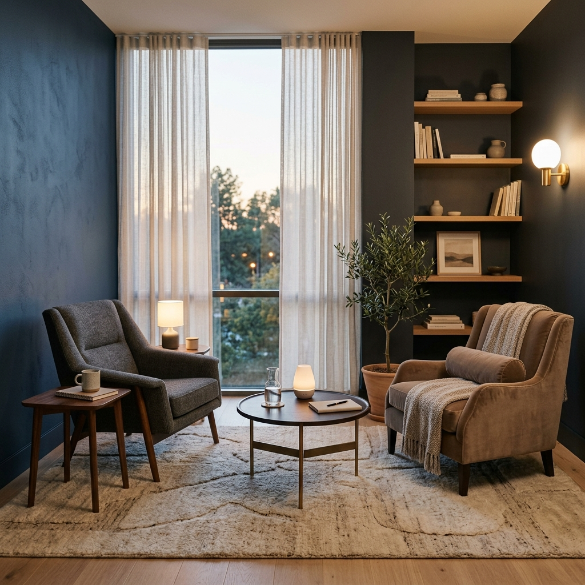

Dr. Diogo Rodrigues — Médico Psiquiatra (USP). Ofereço uma abordagem integrada e sem julgamentos, combinando ciência de ponta e escuta atenta para ajudar você a superar a ansiedade, a depressão e o burnout.
Anos de Experiência
Vidas Transformadas
Sigilo & Ética
Tratamentos baseados em evidência científica
Consultas com tempo estendido e ambiente seguro para você expressar suas angústias livremente.
Privacidade total garantida sob o código de ética médica, tanto no atendimento online quanto presencial.
Diagnósticos e prescrições terapêuticas fundamentadas nos consensos científicos mais modernos do mundo.

Acredito que a psiquiatria moderna deve ir além do diagnóstico de sintomas e da prescrição de medicamentos. Meu foco principal é compreender a individualidade, o estilo de vida e o histórico emocional de cada paciente.
Graduado em Medicina com residência em Psiquiatria pela Universidade de São Paulo (USP), dedico minha carreira a oferecer tratamentos personalizados, baseados no respeito e na empatia mútuos, auxiliando as pessoas a alcançarem a melhor versão de sua saúde mental.
Associação Brasileira de Psiquiatria
Residência e especializações no HC-FMUSP
Parcerias com psicólogos e terapeutas
Presença ativa em congressos internacionais
Cada paciente possui necessidades únicas. Abaixo estão algumas das principais queixas tratadas no consultório com planos terapêuticos personalizados.
Tratamento de crises agudas de pânico, ansiedade generalizada, fobias e preocupações excessivas, unindo medicamentos adequados a técnicas de controle físico-mental.
Saiba maisCuidado integral para episódios depressivos leves a graves e Transtorno Bipolar. Foco na restauração da vitalidade, ânimo e reconexão com o prazer de viver.
Saiba maisTratamento do esgotamento profissional extremo, fadiga crônica, insônia e ansiedade decorrentes do ambiente de trabalho sobrecarregado ou estresse crônico.
Saiba maisAvaliação diagnóstica especializada e tratamento de desatenção, procrastinação crônica, hiperatividade e impulsividade em adultos, promovendo produtividade e foco.
Saiba maisAbordagem clínica para insônia, sonolência diurna excessiva e distúrbios de ritmo circadiano, restaurando as fases naturais e restauradoras do sono.
Saiba maisVoltada a pessoas sob constante estresse que desejam monitorar sua saúde mental, otimizar rotinas e prevenir o aparecimento de transtornos graves.
Saiba maisUm fluxo transparente focado em proporcionar conforto, clareza técnica e segurança emocional desde o primeiro contato.
Clique nos botões e fale conosco via WhatsApp. Escolha o melhor dia e horário para a sua consulta rápida.
Uma sessão detalhada de 60 a 90 minutos para te ouvir com calma, analisar histórico e desenhar o diagnóstico inicial.
Prescrição medicamentosa (se necessário), encaminhamentos e monitoramento terapêutico contínuo com canal direto de suporte.
A fim de respeitar o sigilo profissional estabelecido pelo Código de Ética Médica, as identidades dos pacientes foram abreviadas.
"Fui ao Dr. Diogo depois de passar por dois psiquiatras que mal me olharam nos olhos. A consulta dele é totalmente diferente. Ele ouve de verdade, explica a ação de cada remédio e montou um tratamento que mudou minha relação com a ansiedade."
"Cheguei ao consultório no ápice de um Burnout, sem conseguir trabalhar ou dormir. O Dr. Diogo foi extremamente acolhedor. Ele me ajudou com a medicação necessária e me orientou como reorganizar minha rotina profissional. Sou muito grato."
"Excelente profissional. Trato minha depressão recorrente com ele. Ele é acessível, responde dúvidas com rapidez e sempre avalia os tratamentos mais inovadores. O consultório é super discreto e acolhedor."
Se a sua dúvida não estiver listada ao lado, sinta-se à vontade para enviar uma mensagem diretamente para nossa recepção via WhatsApp.
Enviar dúvida no WhatsAppAgendar uma consulta é simples. Escolha o atendimento online (de qualquer lugar do Brasil) ou presencial em nosso moderno consultório.
Av. Paulista, 1000 — Conj. 1205 — Bela Vista, São Paulo - SP
Segunda a Sexta: 08:00 às 20:00 | Sábado: 09:00 às 13:00
Ao clicar abaixo, você será redirecionado para a nossa recepção de agendamentos no WhatsApp.